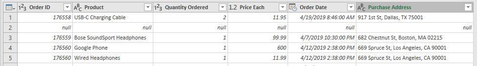

The Token Company 2019 Sales Report
The boss of The Token Company, Mr. Kurbs, did not like the outcomes of the most recent marketing project of the team. He dared the analytics department to identify what really went wrong.
As a clever team of the analytics department, I decided to frame it on a better light. Instead of telling the boss what went wrong, my purpose is to tell him what we could do better, by using the data that we have. The analyses involve transforming the data using Power Query and visualizing it using Power BI. There are also other basic Statistics and Mathematics used.
Step 1: Identifying the business problems.
Before touching the data, let us first identify the key problems. Doing this will give us a sense of direction.
In the end, we need to see the following: Total Sales by States, Total Units Sold by States, Total Sales by Month, Total Sales by Quarter, Top 3 Best-Selling Products of the Year and Average Sales by Hour of the Day
.Step 2: Extracting the data from MySQL Database.
The Token Company stores their data into a centralized database. We can get all the fields inside the sales table using the following SQL queries:
USE tokenc_dB;SELECT * FROM sales;After the queries, we can now export the table as a csv file.
Step 3: Transforming the data using Power Query.
This is the top 5 rows from the raw data.
